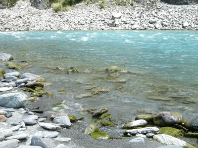
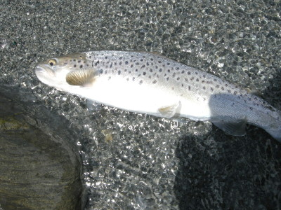
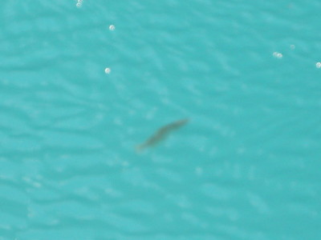

釣行日誌 ＮＺ編 「翡翠、黄金、そして銀塊」
「今日がその日だ」
2010/12/04(SAT)-2
入渓点からかなり歩き、いよいよ上流域に達したようで、両岸が険しく切り立ってきた。少し遡行を続けると、大きく右へ曲がりながら流れ込んでいる荒瀬があった。こちら岸と流心の間には、丸石の点在する静かな深みが連続しており、いかにも！と言った気配が溢れている。

『これはこれは！ 用心してかからねば....』
と、心中で気合いを入れ直し、ティペットの傷と結び目をチェックする。しばらく観察したがゆらめく魚影は見あたらないので、必要最小限だけ水に立ち込み、流れの真下からドライ＋ニンフのドロッパー仕掛けをキャストしてゆく。岸沿いはほとんど止水なので、ハンピーの流下速度が遅い。水深も浅いので、ぶら下げたニンフが底をバウンドしているようにも感じられた。
『これは、ハンピーだけにするべきかな』
などと迷いつつブラインドで釣り上がって行く。ちょっとした大石の向こうにハンピーが落ちた瞬間、水際から銀色の矢が走った。出方が速かったので驚いて早合わせになったが、何とかフッキングしたようで、流心に走り込む魚の重みが伝わってくる。あまり大きくはない。慎重にあしらいつつ岸辺に寄せてきて、ネットが無いので砂地にずり上げた。30cmほどのブラウンである。先の幼魚と同じく、銀白色の魚体をしている。幼い顔立ちであったが、しっかりとレッドハンピーを咥えていた。大事にフックを外し、手を濡らしてから魚体を保持し、流れに戻してやった。

小さくても１尾は１尾。可愛らしいファイトの余韻に浸りつつ、遠くの峰を眺める。ブリントさんは上流を偵察に行ったので、休憩しながら帰りを待つこととした。しばらく待っていると、河原の向こうに彼の姿が現れ、力強い足取りでこちらに向かってくる。
「ヘイ！タケシ！ どうだった？」
「アハ！ 小さいけど１尾釣りましたよ！」
デジカメの画像を見せると、
「ハッハ～！よく釣ったなあ、たいしたもんだ！」
と言って褒めてくれた。それから、こちら岸の崖下におあつらえ向きの流木があったので、ベンチ代わりにして二人で座り、セルフタイマーで記念写真を撮した。ちょうど２時半だった。
流木に腰掛けて、しばし休憩した後、帰途についた。午後になって少々風が出てきたが、河原を歩く身にとっては心地よい。大股のブリントさんに遅れないよう、必死で歩く。ゴロタ石の河原なので、足を挫かないように慎重にステップを運ぶ。途中から河原を外れ、林道を目指して少し藪こぎをした。砂利道へ出てからは歩きが楽になったが、まだ先は長い。途中、小川というか道ばたの側溝を渡る時、ブリントさんが、こんな小さな流れにもウナギが遡って来るんだぞ、と教えてくれた。河口から25kmほどはあるそうだが、ダムも堰も無いのでここまで遡上できるらしい。
懸命に歩いているうちにだんだんと林道の道幅が広がり、ゴールが近いような気がしてきた。しかし、それまでフラットだった道が急に坂道となり、運動不足の身にはコタエた。心臓がバクバクと鼓動し、全身の激しい血流が感じられるような急坂を登り切ると、おお！見覚えのあるゲートが見えた。引き返したポイントから約1時間20分のウォーキングであった。
重い体にムチ打ってゲートを乗り越えて車にたどり着き、呼吸が落ち着くのを待ってからロッドをたたむ。４ピースにバラして竿袋に入れて荷物の上に置いた。RAV-4に二人で乗り込んで走り出す。ブリントさんは農道をしばらく走り、途中で左の脇道に入り込み、少し行くと駐車場があったのでそこにトヨタを停めた。バックパックを再び背負いながら彼が言うには、ここの下は今日釣った川が大峡谷になっており、そこまで遊歩道が続いていること。いつも来るたびに大物ブラウンが何尾も悠々と泳いでいるのを見つけていたのだが、なかなか釣りに来る機会が無く、いつかは竿を出してみたいと思い続けていたこと、などなど。忘れ物が無いか確認してからドアをロックしたブリントさんは、
「今日がその日だ」
と静かにつぶやいて遊歩道へと歩き出した。よく整備された遊歩道を15分ほど下って行くと、長い吊り橋があった。高所恐怖症の人にはあまりお勧めできないが、翡翠色の流れ、と言うか巨大なプール、を眼下に望めるそのスポットは、なかなか人気のある観光地らしく、何人かのツーリストが橋上からの眺めを楽しんでいた。ブリントさんに続いて橋を渡る。途中でブリントさんが立ち止まり、水面の１点をロッドケースで指し示す。

鱒だ。この距離で見てあの大きさなのだから、おそらくは60cm級であろう。水面に近いところを泰然と泳ぎつつ、流下物を選択して食べているらしい。しかしこの大場所はほとんど止水なので、鱒は自分から泳いで進まなければ餌にありつけない。気の向くままに進路を変えているブラウンを見ながら、これは難しい釣りになるな.....と覚悟させられた。
釣行日誌ＮＺ編 目次へ
サイトマップ
ホームへ
お問い合わせ